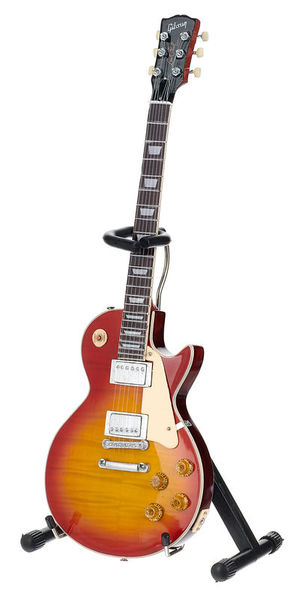
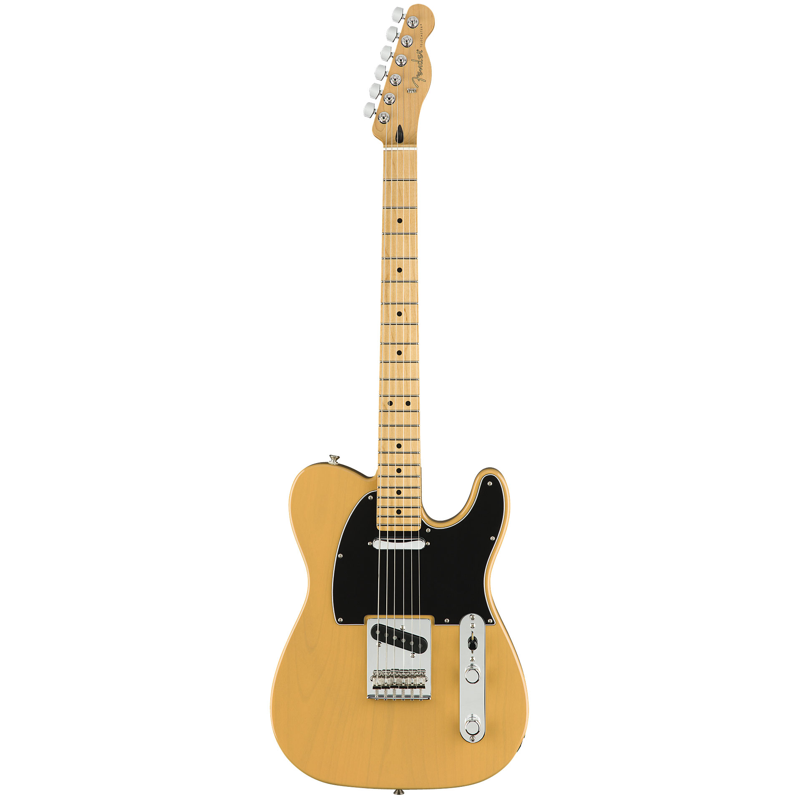

깁슨(Gibson)사에서 개발한 기타입니다. 펜더 회사와 양대산맥을 이루는 회사로 험버커 픽업을 사용한
것이 특징입니다. 위 픽업의 특징은 출력이 강하고 두꺼운 톤을 가지고 있어 록이나 메탈음악에 많이 사용합니다.
소리 특징 : 소리의 질감이 무겁고 드라이브톤이 매력적
기타 사운드 ->오아시스 Don't Look Back In Anger
펜더(Fender)사에서 개발한 기타입니다. 스트라토캐스터 줄여서 '스트랫'이라고 불리는 이 기타는 범용성이 뛰어난
일렉기타입니다. 대중가요에서 들리는 기타소리는 대부분 이 기타로 녹음한 소리입니다.
소리 특징 : 맑고 아름다운 생톤소리(흔히 알고 있는 일렉기타소리입니다.)
기타 사운드 ->적재 캐논변주곡
///

이 기타 역시 펜더(Fender)사에서 처음 개발되었습니다. 최초로 대량생산된 일렉기타로 알려져있습니다.
이 기타는 처음부터 텔레캐스터는 아닙니다. 48년도 테스트 타입으로 개발되었을때 '에스콰이어'라는이름으로
불리었습니다. 그러다 51년부터 브로드캐스터 라는 이름으로 대량생산되다가 52년도에 오늘날 텔레캐스터로
이름이 바뀌었습니다.
소리 특징 : 소리가 맑다못해 까랑까랑한 소리
기타 사운드 ->오혁 위잉위잉